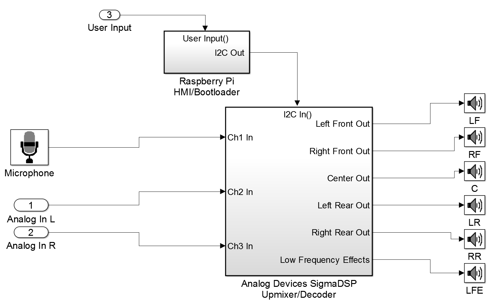

Hello!
Welcome to my personal webpage.
I am currently a DSP Software Engineer at Harman International.
I graduated from the University of Michigan with a BSE in Electrical Engineering in May 2015.
Feel free to take a look around and to contact me if you have any questions.
Linux, Windows, Mac OS X, Analog Devices SHARC / SigmaDSP, TI C55x / C66x, ARM Cortex-M4 / M7 / A9 / A15
C++, C, Python, Matlab, C#, JavaScript, PHP, Fortran, MySQL, HTML5, LaTeX, Lua, Perl
Matlab, Simulink, Eclipse, Git, Arduino, Visual Studio, NetBeans, ADI VisualDSP++, JUCE, Max/MSP, NI LabView, HEAD ArtemiS, Cadence, EAGLE, SolidWorks, TurboCAD, Google SketchUp, Mathematica, Maple, Ableton Live, Pro Tools, AudioMulch
Hands on experience with electronic lab test equipment such as oscilloscopes, network analyzers, meters, and audio analyzers such as those by AudioPrecision
From April 2014 onward I have been employed by Harman International.
Since May 2015 I have been working as a Digital Signal Processing Software Engineer in a more R&D/Pre-development context, currently a member of the Lifestyle Audio "Center of Competence" group. Most of my work has focused on the HALOsonic group of automotive noise management technologies.
Prior to this I was an intern in the Acoustic Systems Engineering group. A substantial amount of this work was related to Harman's audio restoration algorithm Clari-Fi, in tasks related to organizing, developing tools for, and carrying out tuning and validation tests. During this time I also became engaged in developing a platform for the external Electronic Sound Synthesis algorithm.
As a Senior design project, my team and I created a platform to process surround sound audio using an Analog Devices SigmaDSP and a Raspberry Pi, controllable via a touchscreen GUI. You can find the source for this project at https://github.com/brianleu/RPiUpmixer.
As a final project in a DSP course, a partner and I created a convolution reverb VST plugin using the Steinberg VST SDK.
I spent June and July 2013 completing an NSF funded Research Experience for Undergraduates with the Dependable Systems Research Group at Clemson University, led by Dr. Jason O. Hallstrom. My work was on the Intelligent River Project, splitting my time between learning about and deploying wireless, ad-hoc mesh networking nodes using B.A.T.M.A.N and implementing an autonomous quadrotor to be used for data collection using APM:Copter.
From February 2013 to July 2013 I assisted Pooya Movahed, a Ph.D. candidate in Dr. Eric Johnsen's Computational Flow Physics Laboratory, in creating visualizations of data sets generated by his research in hydrodynamic instabilities. Albert Liu and Parth Sheth assisted me in this work. We created a poster which I presented at the XSEDE 13 Conference in San Diego. This work was done on the XSEDE Lonestar cluster located at the Texas Advanced Computing Center
I spent the summer of 2012 parts of the summer of 2013 working at Applied Dynamics International. I was tasked with developing a web application from the ground up that would allow ADI's sales team to track requests for quotation, proposals, and sales orders. Starting with only marginal knowledge of HTML, I taught myself PHP3, JavaScript, and MySQL to complete this task. My application utilizes Zend Framework for interfacing with a MySQL server via PHP and the Dojo Toolkit to provide client-side scripting and an improved user interface. Because the application is for internal use only, I am unable to let you play around with it, but click on the thumbnails below to get a better idea of the functionality the application provides.
In April of 2012, I began an exploration of numerical analysis of nonlinear partial differential equations using high performance computing, under the direction of Dr. Benson Muite. I was joined by Albert Liu and Parth Sheth in a project exploring expansions of the Klein Gordon Equation by running batch jobs on XSEDE HPC resources. We then created visualizations of our data using VisIt. We created a poster which was presented at the XSEDE12 Conference in Chicago in July of 2012 and at the SC12 Conference in Salt Lake City in November of 2012. Our work was also featured on the Office of Research Cyberinfrastructure's (Now ARC) newsletter at the University of Michigan. You can check out some of the simulations that we created below.
BSE Electrical Engineering - University of Michigan - Septemper 2011 - May 2015
If you have any questions, comments, or feedback, feel free to email me at brian.d.leu@gmail.com
{kind=link}
{kind=link}
{kind=link}